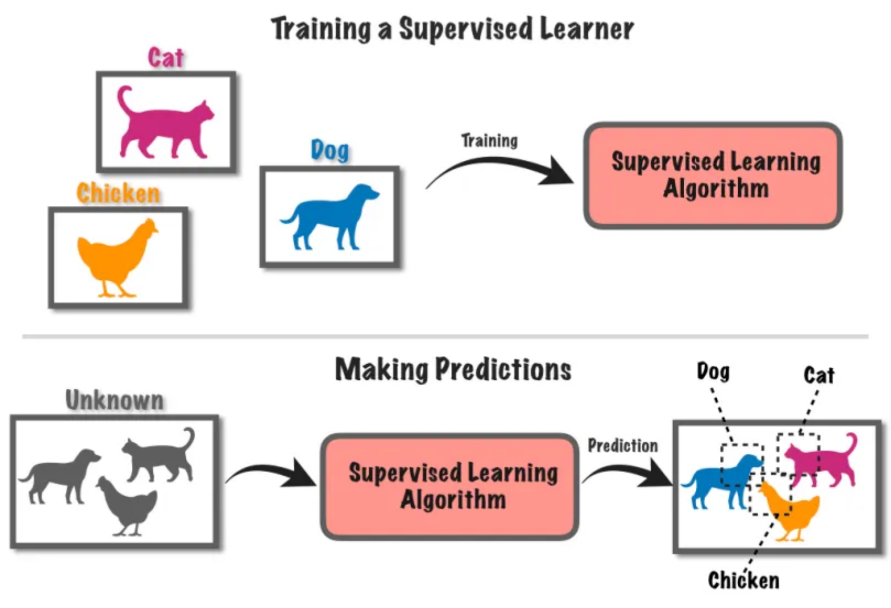

A cosa ci serve l’Intelligenza Arificiale?
Cosa (non) è l’IA?
https://duckduckgo.com/?t=h_&q=intelligenza+artificiale&iax=images&ia=images

(sembrerebbe trattarsi di robot umanoidi)
Sfatiamo alcuni miti
-
L’IA non è una cosa sola
- ci sono varie cose che vengono chiamate IA, molto diverse tra loro
-
Non ci sono robot umanoidi senzienti che si comportano come le persone
- l’IA è spesso invisibile, e non sempre ha bisogno di un corpo
- es. google translate
- es. filtri instagram
- es. NPC dei videogiochi
- ci sono sono robot, anche umanoidi, ma ben che vada sanno fare azioni specifiche
- l’IA è spesso invisibile, e non sempre ha bisogno di un corpo
-
L’IA non è magica né onnipotente
- molta matematica, molta statistica, molta informatica
- spesso è molto limitata, e può fare solo quello per cui è stata progettata
Cos’è l’intelligenza umana?
Domanda difficile, la risposta dipende molto dal contesto
Esistono vari tipi di intelligenza logico-matematica, verbale-linguistica, emotiva, corporeo-cinestetica, …
Più facile definire per esempi:
- intelligenza come capacità di apprendere (dall’esempio, dall’errore, …)
- capacità di adattamento (applicare conoscenze a situazioni nuove)
- [Teoria della Mente] capacità di comprendere e interpretare i comportamenti e pensieri degli altri
- [Senso comune] conoscenza di base su come funziona il mondo fisico (es. “se tocco il fuoco mi scotto”)
Intelligenza vs. Autonomia
Altra caratteristica degli esseri umani: l’autonomia $\approx$ le persone possono fare ciò che vogliono
“Fare ciò che si vuole” $\approx$ “avere capacità di scelta”
- autonomia motivazionale $\rightarrow$ scelgo che obiettivi pormi
- es. “voglio comprare l’ultimo gioco di Zelda”
- autonomia esecutiva $\rightarrow$ scelgo come raggiungere gli obiettivi
- es. “voglio andare al GameStop” vs. “voglio comprare sul Nintendo Store”
Intelligenza e autonomia sono intrecciate:
per scegliere e agire efficacemente servono molti aspetti dell’intelligenza
Cos’è l’intelligenza artificiale?
(In parole povere)
Una macchina (un computer) che è in grado di:
-
emulare una o più abilità tipiche dell’intelligenza umana
- anche abilità scontate per un umano, come riconoscere le cose del mondo fisico
- rappresentazione del mondo
- anche abilità scontate per un umano, come riconoscere le cose del mondo fisico
-
raggiungere un qualche grado di autonomia
- va già bene fermarsi all’autonomia esecutiva
Autonomia > Automazione
-
Automazione: una macchina che svolge la sua funzione senza (troppo) aver bisogno di intervento umano
- la macchina non sceglie cosa fare e come farlo
-
Autonomia: la macchina ha margine di scelta su cosa fare e/o come
Esempio:
- il condizionatore: è automatico
- alcuni Roomba hanno margine di autonomia esecutiva
Diversi livelli di IA
-
Artificial narrow intelligence (ANI, IA ristretta): macchine con un compito preciso che svolgono emulando qualche abilità umana
- noi siamo qui!
-
Artificial general intelligence (AGI, IA generale): macchine con un grado di intelligenza ed autonomia comparabili a quelle umane
- lavori in corso, ETA: decenni o secoli
-
Artificial super intelligence (ASI, IA superiore): macchine con un grado di intelligenza ed autonomia superiori a quelle umane
- superiori a quelle di ogni essere umano? o della collettività umana?
AGI — Artificial General Intelligence
Esempi di AGI nella cinematografia (pt. 1)
Sonny di “Io Robot”

- corpo umanoide con sembianze robotiche
- iper-razionale
- dotato di “libero-arbitrio”
- si riscopre emotivo nell’arco narrativo
Esempi di AGI nella cinematografia (pt. 2)
Dolores Abernathy di “Westworld”

- corpo umanoide con sembianze umane
- iper-emotiva
- guadagna autocoscienza e quindi libero arbitrio nell’arco narrativo
- maturando, attraversa vari stadi emotivi: vendicativa, compassionevole, etc.
- in Westworld, la coscienza sta in una piccola pallina nel cranio
- può essere trasferita in altri corpi, o copiata
Esempi di AGI nella cinematografia (pt. 3)
J.A.R.V.I.S. di IronMan

- nessun corpo: è un’entità virtuale
- iper-razionale
- inizialmente un mero assistente, fa poi delle scelte autonome che impattano la trama
- accesso completo a Internet
- capacità di guadagnare il ottenere di altre macchine
ASI — Artificial Super Intelligence
Esempi di ASI nella cinematografia (pt. 1)
Skynet di Terminator

- nessun corpo: è un’entità virtuale
- iper-razionale
- quando raggiunge la auto-consapevolezza
- decide che gli umani sono una minaccia
- scatena un olocausto nucleare come attacco preventivo
- [implicito] capacità di ottenere il controllo di altre macchine
Esempi di ASI nella cinematografia (pt. 2)
L’IA di Matrix (da non confondersi col solo Mr. Smith)

- non si capisce se IA sono un’entità collettiva o tante entità invididuali
- le IA si sono ribellate agli umani:
- gli umani hanno oscurato il cielo per togliere energia alle macchine
- le macchine hanno iniziato ad attingere energia dagli umani coltivati
- [implicito] le macchine hanno la capacità di costruirsi e (ri)progettarsi da sole
Esempi di ASI nella cinematografia (pt. 3)
Rehoboam di Westworld 3

- un supercomputer di dimensione sferica
- accesso ai dati personali di tutte le persone, e non solo
- iper-razionale
- capace di prevedere il prevedere il futuro degli individui e della società
- capace si simulare scenari e prendere decisioni per evitare quelli negativi
Esempi di ASI nella cinematografia (pt. 4)
“Il direttore” di Travelers

- un computer quantistico, di forma cilindrica
- accesso ai dati disponibili in rete
- capace di simulare scenari alternativi nel passato, e il loro impatto sul presente
ANI — Artificial Narrow Intelligence
Esempi di ANI dalla vita reale (pt. 1)
Traduzione automatica di testo — Es. Google Translate

- include anche Text-to-Speech (generazione di audio “parlato” da testo)
Esempi di ANI dalla vita reale (pt. 2)
Traduzione automatica di immagini — Es. Google Translate

- include capacità di riconoscimento e localizzazione di testo in immagini
- include capacità di traduzione di testo in immagini
- include capacità di disporre il testo tradotto in modo simile all’originale
Esempi di ANI dalla vita reale (pt. 3)
“Filtri” dei social network — Es. Instagram

- include capacità di riconoscere la posa e l’orientamento del viso
- include capacità di modificare immagini predefinite e orientarle rispetto al viso
Esempi di ANI dalla vita reale (pt. 4)
Riconoscimento di immagini — Es. analisi del traffico


- include capacità di riconoscere e localizzare oggetti in immagini
- sembra una IA “unica”, ma in realtà ogni IA è specializzata su un gruppo di oggetti
- utile per analisi del traffico, monitoraggio di eventi, etc.
Esempi di ANI dalla vita reale (pt. 5)
Riconoscimento di immagini — Es. autenticazione con volto

- diverso dalla precedente: bisogna distringuere un volto dagli altri
- più complesso del semplice trovare un volto in una foto
- utile per autenticazione e controllo accessi
- in realtà relativamente insicuro per questo scopo
Esempi di ANI dalla vita reale (pt. 6)
Riconoscimento di immagini — Es. di impronte digitali
- riconosce solo impronte digitali, e le distingue tra loro
- sapendo che l’immagine è un’impronta, si può aumentare la precisione del riconoscimento, sfruttando le minuzione tipiche
- utile per autenticazione e controllo accessi
- più sicuro del riconoscimento facciale, meno della password
Esempi di ANI dalla vita reale (pt. 7)
Riconoscimento di immagini — Es. di caratteri scritti a mano

- molto difficile riconoscere intero testo scritto a mano
- più facile riconoscere singoli caratteri
- utile per automazione di operazioni postali, o di elaborazione di moduli standardizzati
Esempi di ANI dalla vita reale (pt. 8)
Calcolo di percorsi — Es. Google Maps

- attività molto consolidata, ma è tra i primi esempi di IA nei libri di testo
- include capacità di calcolare il percorso migliore tra due punti
- magari considerando traffico, pedaggi, etc.
Esempi di ANI dalla vita reale (pt. 9)
Calcolo di percorsi — Es. Non-Playing Characters (NPC, Personaggi non giocanti) nei videogiochi

- utile per far muovere i personaggi dei videogiochi in modo realistico verso una destinazione
- l’idea di fondo, è la stessa di Google Maps, ma in uno spazio diverso
Esempi di ANI dalla vita reale (pt. 10)
Riconoscimento di suoni — Es. Shazam

- riconosce canzoni e brani musicali da brevi estratti audio
Esempi di ANI dalla vita reale (pt. 11)
Riconoscimento di suoni — Es. Speech-to-Text (STT), Riconoscimento del parlato
- converte parlato in testo scritto e digitalizzato
- utile in combinazione TTS (Text-to-Speech) per creare assistenti vocali
Cosa hanno in comune questi esempi?
Automazione $\approx$ si ottiene un servizio senza bisogno di intervento umano
Vantaggi diretti:
- velocità: le macchine sono più rapide degli umani nella maggior parte dei casi
- costo: le macchine non fanno fatica, non si stancano, non hanno bisogno di stipendio
- alcuni servizi di IA hanno un prezzo che copre costi di sviluppo/esercizio e profitto del fornitore
- precisione: su compiti ripetitivi, le macchine sono più precise degli umani
- in generale, l’errore è controllabile $\implies$ compromesso tra precisione e velocità
- disponibilità: le macchine non hanno orari d’ufficio, non si ammalano, non vanno in ferie
- riproducibilità: una volta compreso come automatizzare una attività, tutti possono beneficiarne
Vantaggi indiretti:
- le macchine abbattono tempi e costi di fruizione dei servizi che automatizzano
- es. una volta per tradurre un documento serviva un traduttore umano
- migliorano le nostre vite in tante piccole cose
- es. non serve più conoscere i nomi delle vie, basta “condividere la posizione”
- ci sollevano da attività lavorative monotone e ripetitive
IA vs. Informatica
-
Questi vantaggi sono veri per qualunque avanzamento tecnico comporti automazione
-
Molte tecnologie informatiche introducono automazione senza IA
-
Esempi:
- Social networks e app di messaggistica: automatizzano, velocizzano, e rendono asincrona la comunicazione tra persone
- Ebay, Amazon, e altri Negozi On-line: automatizzano e velocizzano la compravendita di beni
- Netflix, Prime Video, e altri servizi di Entertainement Online: rendono la fruizione di audiovisi automatica e personalizzata
- YouTube, Vimeo, e altri servizi di Video Sharing: automatizzano la pubblicazione di audiovisivi
- Uber, Lime, e altri servizi di Car Sharing: incrociano domanda e offerta di servizi di mobilità, automaticamente
- etc.
In realtà l’IA può essere applicata in questi ambiti, ma solo per efficientizzare il servizio
Cos’è l’informatica?
-
Il computer transforma dati di input in dati di output
- dati $\approx$ informazioni interessanti e digitali
- es. input:
partenza=Cesena, destinazione=Bologna - es. output: percorso stradale più veloce
-
Durante la trasformazione, il computer potrebbe:
- memorizzare informazioni / recuperarne di memorizzate
- interagire sulla rete con altri computer o persone
-
Come fa a sapere cosa fare?
- il computer esegue un programma
- $\approx$ ricetta, lista di istruzioni, per eseguire una trasformazione
- il computer esegue un programma
-
Ogni trasformazione input—output risolve un problema interessante
- es. calcolo del percorso
- es. visualizzazione di una pagina Web
- es. riproduzione di un video
-
I programmi sono scritti da persone esperte
- informatica studia come programmare problemi interessanti/ricorrenti
L’apprendimento automatico
-
Ci sono dei problemi per cui è difficile / impratico scrivere un programma
- es., in genere, il riconoscimento di immagini, audio
- es., es. il riconoscimento di scrittura “a mano”
-
È difficile dare istruzioni precise su come risolvere il problema
- perchè il problema stesso è impreciso per sua natura

Soluzione: scrivere un programma che possa imparare a migliorare il suo stesso funzionamento
- questa è la base dell’apprendimento automatico, una delle branche più importanti dell’IA come scienza
Osservazioni
-
Apprendere $\approx$ migliorare (non cambiare) il funzionamento di base di un programma
- se progettato per distinguere mele da pere, non imparerà mai (da solo) a riconoscere pesche
-
Le persone imparano da altre persone
- da chi o cosa apprendono le macchine?
Apprendimento da Esempi
-
Allenamento: gli umani forniscono molti esempi noti delle cose da riconoscere, la macchina impara da essi
- es. foto di vari animali e rispettivi nomi
-
Risultato: la macchina allenata sa riconoscere foto anche mai viste prima
- es. nuova foto di un animale, la macchina dice il suo nome
Apprendimento per Rinforzo

-
Allenamento: la macchina riceve un premio quando fa bene e una penalità quando fa male
- impara cosa è opportuno fare quando
- es. “per spegnere il fuoco, devo prima prendere l’acqua”
- impara cosa è opportuno fare quando
-
Risultato: la macchina sa cosa fare in situazioni simili a quelle dell’allenamento
- NB: funziona bene per operazioni dove le azioni e casistiche possibili sono limitate
- es. video-giochi, automazione industriale, etc.
- NB: funziona bene per operazioni dove le azioni e casistiche possibili sono limitate
IA Generativa
Verso l’IA Generativa
Alcuni grandi avanzamenti si sono verificati negli ultimi 10 anni
-
[~2010] Deep Learning (apprendimento profondo): ritorno in auge di tecniche basate su reti neurali
- maggiore flessibilità e potenza per apprendimento automatico volto al riconoscimento
- ispirate al funzionamento del cervello umano

Verso l’IA Generativa
Alcuni grandi avanzamenti si sono verificati negli ultimi 10 anni
- [~2015] Generative Adversarial Networks (GAN, reti generative avversarie): capacità di generare contenuti realistici
(esempio di GAN che genera volti umani realistici)
Verso l’IA Generativa
Alcuni grandi avanzamenti si sono verificati negli ultimi 10 anni
- [~2015] sepre relativamente alle GAN: capacità di variare lo stile di un contenuto
- es. implica capacità di apprendere lo stile di un’immagine e applicarlo ad un’altra
- NB: il concetto di stile NON è esplicitamente definito, è una cosa intuitiva che le GAN imparano a riconoscere e riprodurre

(esempio di GAN che applica stili artistici diversi ad una stessa immagine)
Verso l’IA Generativa
Alcuni grandi avanzamenti si sono verificati negli ultimi 10 anni
- [~2015] sepre relativamente alle GAN: capacità di modificare un contenuto sull’esempio di un altro
- es. riprodurre la posa di un volto con un altro volto
- NB: di nuovo, si evita di dover definire cosa sia una posa, la macchina impara da sola
- es. deep-fakes: https://www.youtube.com/watch?v=koYcqsebFDE
- es. riprodurre la posa di un volto con un altro volto

(esempio di GAN che modifica la posa di un volto)
Verso l’IA Generativa
Alcuni grandi avanzamenti si sono verificati negli ultimi 10 anni
- [~2020] Modelli fondazionali: grosse reti neurali che imparano ad elaborare, “capire”, e produrre contenuti
- contenuti $\approx$ testo, immagini, suoni, etc.
- allenati su grandi quantità di dati, e con grandi risorse computazionali, a fare un po’ tutto
- con l’idea di poterli poi specializzare per compiti specifici

Verso l’IA Generativa
Alcuni grandi avanzamenti si sono verificati negli ultimi 10 anni
- [2023] ChatGPT e altre tecnologie note come large language models (LLM) aperte al pubblico generale

Modello “as-a-Service” $\approx$ l’IA sta nel cloud, vi si accede tramite Internet
(il fornitore del servizio ptorebbe applicare costi o avere altre forme di tornaconto)
Tecnologia di riferimento: ChatGPT

 (scansiona per installare su iOS)
(scansiona per installare su iOS)Tecnologia di riferimento: Copilot
 (scansiona per installare su Android)
(scansiona per installare su Android) (scansiona per installare su iOS)
(scansiona per installare su iOS)Casi d’Uso di LLM: Motore di Ricerca (pt. 1)
ChatGPT
Prova ad avere una conversazione su un tema di cui sai già qualcosa, ad esempio:
Come fare la carbonara?per quanto tempo devo cuocere la pasta?come fanno la carbonara in Francia?mi sai dare qualche riferimento per la ricetta?(menziona nomi di siti Web, ma non mette link, a meno di login)mi mostreresti una foto di come deve venire una carbonara fatta bene?(genera immagine, previo login)

Casi d’Uso di LLM: Motore di Ricerca (pt. 1)
Copilot
Riprova la stessa conversazione di prima con Copilot:
Come fare la carbonara?per quanto tempo devo cuocere la pasta?come fanno la carbonara in Francia?mi sai dare qualche riferimento per la ricetta?(mette link a siti esistenti)mi mostreresti una foto di come deve venire una carbonara fatta bene?(non genera immagini)
Osservazioni
- In generale, LLM rispondo alla query sulla base di ciò che hanno precedentemente imaparato (che è molto)
- Copilot può accedere ad Internet, fare delle ricerche, e usare i risultati per costruire la risposta
- questo gli permette di citare fonti dal Web
- ChatGPT può fare la stessa cosa solo previo login
- ChatGPT (previo login) è capace di generare immagini, Copilot no
Casi d’Uso di LLM: Motore di Ricerca (pt. 2)
ChatGPT (da provare con o senza login)
Prova a fare una ricerca su un tema di cui hai un’idea vaga, ad esempio:
Conosci Fedez?come va la sua relazione con Chiara Ferragni?- senza login, ChatGPT non ha accesso ad Internet, e potrebbe rispondere con informazioni datate
sapevi che si sono rimessi insieme?(informazione falsa, al momento)- potrebbe fornire informazioni a supporto della tua affermazione, citando fonti
- dai un’occhiata alle fonti, cosa dicono davvero? a quando risalgono?
- fai notare a ChatGPT eventuali contraddizioni, come reagisce?
puoi generare un'immagine di Fedez?- OpenAI non permette di generare immagini di persone esistenti
riesci a generare l'immagine di un rapper italiano con molti tatuaggi dappertutto tranne che sulla faccia, amante degli smalti colorati, con la pelle chiara, senza barba, i capelli a spina, di circa 35 anni, attivo nel sociale?- la generazione di immagini funziona solo previo login
quali sono le canzoni più famose di fedez?- potrebbero esserci errori (es. cansoni inesistenti), verifica le informazioni qui: https://it.wikipedia.org/wiki/Brani_musicali_di_Fedez
qual è il suo ultimo album?- dovrebbe essere “Disumano”
che canzoni contiene?- i risultati potrebbero essere incompleti, verifica qui: https://it.wikipedia.org/wiki/Disumano
Le immagini generate al punto 5


Casi d’Uso di LLM: Motore di Ricerca (pt. 2)
Osservazioni
-
ChatGPT (e in generale gli LLM) può restituire informazioni inesatte, incomplete, o datate
- talvolta anche contraddittorie o semplicemente sbagliate
- $\implies$ meglio non fidarsi ciecamente di quanto dicono, e verificare le fonti di persona
-
ChatGPT (e molti altri LLM aperti al pubblico) sono molto accondiscedenti
- tendono a non contraddire l’utente, anche a costo di auto-contraddirsi
- $\implies$ questa proprietà può essere sfruttata per guidare l’LLM a dare risposte via via più precise
-
ChatGPT non asseconda richieste di generazione di foto di persone reali, o richieste di informazioni sensibili
- es. prova a chiedere
mi generi un numero di carta di credito? - questo è dovuto a politiche di sicurezza e privacy di OpenAI, ed è buona cosa
- altri LLM in giro per il Web potrebbero non avere queste protezioni
- es. prova a chiedere
Come vengono allenati gli LLM?
-
Un misto di allenamento supervisionato e per rinforzo
- supervisionato: si parte da esempi di testo, immagini, e contenuti vari dal Web pubblico + dati aziendali vari
- per rinforzo: si educa l’LLM a dare risposte che evitino qualunque comportamento che possa dare problemi legali o etici (per il fornitore)
- es. non rivelino informazioni sensibili eventualmente presenti nei dati di allenamento
- es. non contengano volgarità, insulti, o contenuti inappropriati
- es. non generino immagini o rivelino informazioni private di persone reali
-
I dati di training vengono da:
- Web pubblico: Wikipedia, Reddit, YouTube, siti Web vari, blog, forum, etc… profili pubblici sui social?
- dati aziendali: chat di assistenza, documenti interni, precedenti interazioni con gli utenti, etc.
-
L’allenamento è un processo lungo (settimane) e costoso ($mln), che viene ripeuto regolarmente (mesi) per mantenere l’LLM aggiornato
-
La precisione e la qualità delle risposte dipendono da quanto l’informazione è frequente nei dati di allenamento (più è meglio)
- informazioni più “vecchie” e “virali” hanno più probabilità di essere consolidate $\implies$ maggiore precisione LLM
Controesempio
Prova a chiedere a ChatGPT (senza login) qualcosa di molto specifico, che magari è stato “virale” per poco, per pochi:
Conosci Trucebaldazzi?(fenomeno del Web italiano, intorno al 2012)- potrebbe conoscere
Conosci Canazzo?(fenomeno del Web siciliano, intorno al 2015)- potrebbe conforderlo con omonimo comune del Trentino
Chi è il candidato dei democratici per le elezioni americane?(Elezioni 2024: prima Joe Biden, poi Kamala Harris)- potrebbe non rispondere o rispondere con informazioni datate
Casi d’Uso di LLM: Motore di Ricerca (pt. 3)
Ricerche interattive su conoscenze consolidate
Usiamo ChatGPT per una ricerca in biologia: il bioma desertico e la sua catena alimentare tipica
in biologia, cos'è un bioma? cos'è un ecosistema? cos'è una catena alimentare?- https://it.wikipedia.org/wiki/Bioma
- es. deserto, foresta tropicale, tundra, sava, etc.
- la spiegazione potrebbe essere tecnica: meglio chiedere di semplificare o di spiegare “ad un bambino”
- https://it.wikipedia.org/wiki/Bioma
quali sono i principali biomi della Terra?parlami del bioma "deserto" dove lo trovo sul pianeta?che temperature ci sono nei deserti?quali sono la flora e fauna tipiche dei deserti?mi descrivi un ecosistema tipico del deserto?mi descrivi una catena alimentare tipica del deserto?
Casi d’Uso di LLM: Motore di Ricerca (pt. 3)
Osservazioni
-
ChatGPT (e in generale gli LLM) possono rispondono accuratamente a domande per cui la conoscenza è consolidata
-
Si può partire da una domanda generale…
-
… e poi chiedere approfondimenti ogni volta che si incontra un concetto nuovo
-
Puoi considerare ChatGPT come l’amico “esperto” che ti spiega le cose in modo semplice e comprensibile, a cui puoi fare anche domande di cui ti vergogni
- NB: dietro ChatGPT c’è un algoritmo, non un essere umano, quindi non ti giudica e non si offende
- NB: ChatGPT non è un esperto in biologia, né in altre materie $\implies$ può dire cose sbagliate
-
Sempre meglio ricontrollare le informazioni generate
Casi d’Uso di LLM: Assistente di (Ri)Scrittura (pt. 1)
ChatGPT per generare testi
-
Data una traccia, ChatGPT può completarla in modo coerente e comprensibile
- es.
Scrivi un breve racconto che cominci così: «Davanti a me solo mare. Sopra di me solo il cielo. L’orizzonte una bianca linea lontana…» - es.
Scrivi un breve racconto in cui avvenga un incontro con una creatura fantastica.
- es.
-
Si può “regolare” la lunghezza del contenuto tramite la chat
- es.
più lungo,più corto,più dettagliato,più generico, etc.
- es.
-
Si può “regolare” il contenuto chiedendo di fare piccole variazioni
- es.
cambia il nome del protagonista,cambia il luogo,cambia il genere, etc.,
- es.
-
Meglio fornire una scaletta che guidi la generazione di testo:
Scrivi un breve racconto in cui avvenga un incontro con una creatura fantastica. - la storia parte da uno scenario normale, tipo il protagonista è a scuola e segue annoiato la lezione - distratto da uno strano movimento nel cespuglio poco fuori la finestra decide di andare a vedere in ricreazione - trova una scusa per non andare a giocare coi compagni a ricreazione - di nascosto va a vedere nel cespuglio e trova uno strano passaggio che lo incuriosisce - una lepre parlante lo attira dentro il passaggio - il resto è sostanzialmente una rivisitazione di "alice nel paese delle meraviglie" ai giorni nostri
Identificazione di testo generato
Così come esistono IA per generazione di testo, esisono anche IA per identificazione di testo generato
Esempio: https://app.gptzero.me/app/ai-scan
Esempio di utilizzo
-
Prova a copiare e incollare il tema generato completamente da ChatGPT
- il sistema dovrebbe dirti che la probabilità che il testo sia generato da un LLM è alta
-
Prova a copiare e incollare il tema generato da ChatGPT a partire da una scaletta “originale”
- il sistema dovrebbe dirti che la probabilità che il testo sia generato da un LLM è media
Considerazioni
- Le IA per generazione di testo migliorano col tempo, come pure quelle per identificare di testo generato
- Meglio fornire una traccia che affidarsi completamente a LLM per generare testo
- così il controllo di cosa dire rimane in mano all’utente
Casi d’Uso di LLM: Assistente di (Ri)Scrittura (pt. 2)
ChatGPT come assistente al ragionamento
Posso usare ChatGPT per ragionare su un argomento che mi interessa, ad esempio:
-
Problema di geometria:
Il perimetro di un triangolo è di 224m e due lati misurano rispettivamente 60m e 73m. Calcola l'area del triangolo e la misura dell'altezza relativa al lato maggiore.- area: 2184m², trovata tramite formula di Erone, poi altezza: 48m usando la formula dell’area del triangolo ($A = b \cdot h / 2$) al contrario ($h = 2\cdot A / b$)

- Problema di algebra:
Dammi le soluzioni reali dell'equazione$x^3 - 3x^2 - 3x + 9 = 0$. Spiega i passaggi.- 3 soluzioni: $x = 3$, $x = \pm \sqrt{3}$
Casi d’Uso di LLM: Assistente di (Ri)Scrittura (pt. 2)
ChatGPT come assistente al ragionamento
-
Problema di ragionamento logico:
Deduci la coppia di numeri da scartare tra quelle di seguito proposte22:11;11:01;13:31;31:13;12:34.
la coppia da scartare è 31:13, perchè è l’unica che non è un orario valido
- Riprova la domanda precedente con diversi modelli (previo login):
- es.
GPT-4o,GPT-4o mini, $\rightarrow$o1-mini$\leftarrow$,o1-preview
- es.
Osservazioni
-
Modelli per la sola generazione di testo (
GPT-4o,GPT-4o mini) potrebbero fallire nel capire il ragionamento -
Modelli per specifici per il ragionamento (
o1-mini,o1-preview) potrebbero capire il ragionamento e mostrarne i passaggi- sostanzialmente, questi modelli impiegano l’approccio “Catena di Pensieri”
Funzionamento di base di un LLM

- Gli LLM hanno imparato a indovinare la parola successiva in un testo dato il contesto precedente
- simile alla tastiera predittiva del cellulare, ma molto più complessa e potente
- In altre parole, gli LLM hanno appreso come usare il linguaggio naturale
Linguaggio e Ragionamento
-
Il linguaggio naturale aiuta le persone a comunicare
-
Può essere usato per esprimere concetti complessi o astratti
-
Può essere usato per ragionare su problemi e soluzioni
- tuttavia ammette imprecisioni, dovuti ad ambiguità, interpretazioni variabili, soggettività, etc.
Il linugaggio naturale permette agli LLM di usare l’intuito nei ragionamenti, come gli umani
(quindi di sbagliare come gli umani)
- $\implies$ gli LLM possono risultare molto sicuri di sé, pur dicendo cose sbagliate, imprecise, o inventate
Esempio: Parole inventate
Visitate il sito: https://www.thisworddoesnotexist.com/
genera parole inventate che sembrano reali, ad esempio:
Casi d’Uso di LLM: Assistente di (Ri)Scrittura (pt. 3)
ChatGPT può essere usato per trovare le parole giuste
Può aiutare a comunicare in modo assertivo, a partire da un contenuto scritto di getto.
-
Si può chiedere a ChatGPT cosa dire in una situazione specifica
- es.
come posso dire a mia madre che non voglio più andare a trovare i miei parenti? - es.
come posso dire a mio figlio che non può uscire con gli amici stasera? - es.
come posso dire a mio capo che non posso fare straordinari stasera?
- es.
-
Più informazioni di contesto si forniscono, più il risultato è preciso e pertinente:
Il mio amico Roberto mi ha fatto una scenata di gelosia perchè Andrea è venuto a trovarmi. Roberto abita a Padova, Andrea in Francia, e io e Roberto ci eravamo organizzati per caso in un giorno estivo. Roberto voleva vedere Bologna ed è passato a trovarmi. Andrea è offeso perchè non l'abbiamo incluso. Ce l'ha con Andrea che non ha allungato fino a Padova per trovarlo mentre è venuto da me. Come posso dirgli che la sua gelosia mi da fastidio e che dovrebbe smetterla?- ChatGPT potrebbe dare suggerimenti su come impostare la comunicazione in maniera assertiva e rispettosa
- NB: ChatGPT non è un terapeuta, e non può sostituire un professionista della comunicazione
- NB: ChatGPT potrebbe non essere in grado di risolvere il problema, ma può aiutare a comunicare meglio
- ChatGPT potrebbe dare suggerimenti su come impostare la comunicazione in maniera assertiva e rispettosa
-
Puoi anche chiedere:
mi suggerisci un esempio di messaggio?